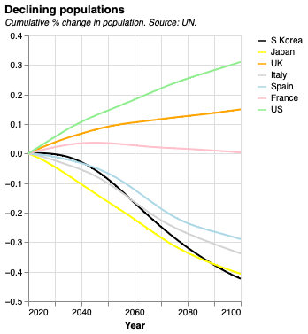
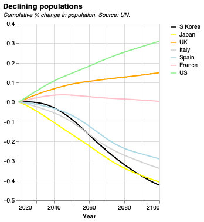
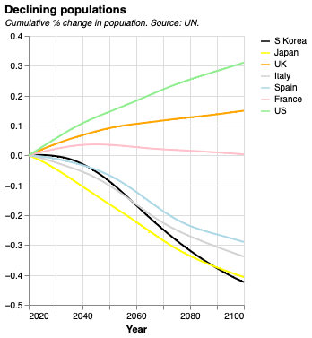

LinkedIn | GitHub | Portfolio | Project | Growth Diagnostic | Economics Project

Public policy professional with 9 years of experience in infrastructure advisory, financing, and economic regulation, with a strong focus on sustainability, environmental management, and the circular economy. Specialized in applying financial and economic analysis to complex public sector challenges, particularly in water, sanitation, and urban development.
Recently completed a Master of Public Policy at the London School of Economics, with expertise in growth diagnostics, public finance, and quantitative evaluation using Stata. Demonstrated success in investment planning, cost-benefit analysis, and in aligning regulatory frameworks with financial tools to deliver climate-resilient and financially sustainable infrastructure solutions.
Worked in business development and bidding for projects funded by international organizations such as the World Bank, ADB, and others, as well as state governments and the Government of India, successfully securing projects worth USD 1.05 million.